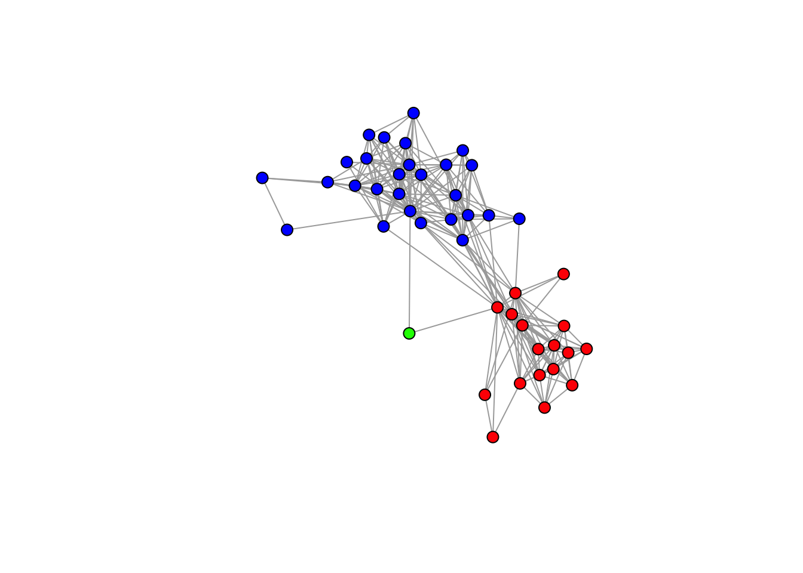
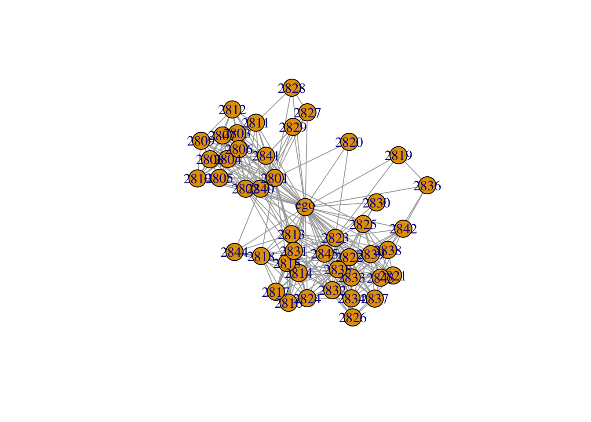
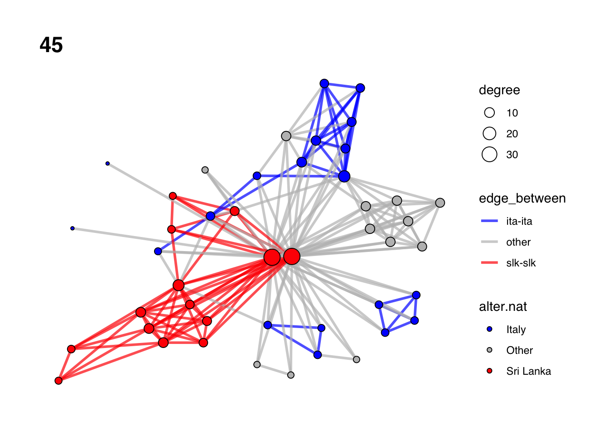
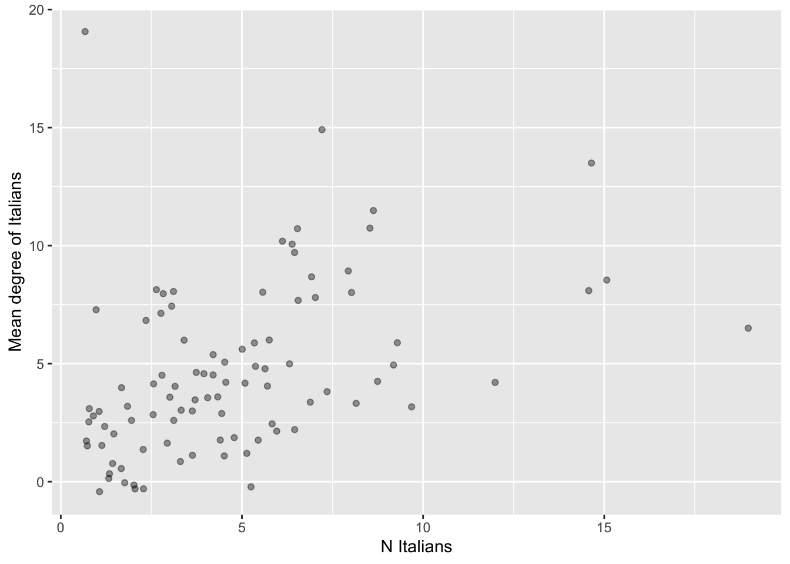
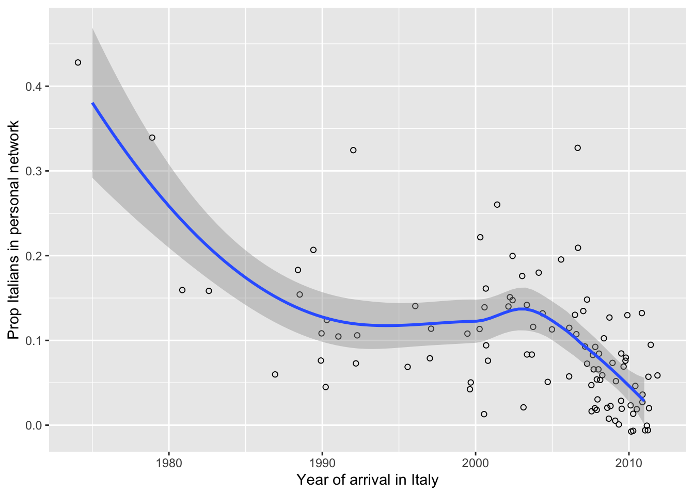

Chapter 8 Supplementary topics
8.1 More R programming topics
8.1.1 Types and classes of objects
This is a quick summary of the basics about types and classes of objects in R.
Three functions are used to know what kind of object you are dealing with in R:
class(),mode(), andtypeof().For most purposes, you only need to know what the class of an object is. This is returned by
class(). The class of an object determines what R functions you can or cannot run on that object, and how functions will behave when you run them on the object. In particular, if the function has amethodfor a specific class A of objects, it will use that method whenever an object of class A is given as its argument.typeof()andmode()return the type and mode of an object, respectively. Although they refer to slightly different classifications of objects, type and mode give essentially the same kind of information — the type of data structure in which the object is stored, also called the R “internal type” or “storage mode”. For example, an object can be internally stored in R as double-precision numbers, integer numbers, or character strings.- You should prefer
typeof()overmode().mode()refers to the old S classification of types and is mostly used for S compatibility.
- You should prefer
While most times all you need to know is the
classof an object, there are a few cases in which knowing thetypeis useful too. For example, you may want to know thetypeof a matrix object (whoseclassis alwaysmatrix) to check if the values in the matrix are being stored as numbers or character strings (that will affect the result of some functions).Main classes/types of objects
numeric: Numerical data (integer, real or complex numbers).logical:TRUE/FALSEdata.character: String data.factor: Categorical data, that is, integer numbers with string labels attached. May be unordered factors (nominal data) or ordered factors (ordinal data).
Special and complex classes/types
list: A collection of elements of any type, including numeric, character, logical (see Section 5.3).data.frame: A dataset. In R, a data frame is a special kind of list (its type islistbut its class isdata.frame), where each variable (column) is a list element (see Section 2.3.4)matrix: Matrix values can be numeric, character, logical etc. So an object can havematrixas class andnumeric,characterorlogicalas type. While data frames can contain variables of different type (e.g. a character variable and a numeric variable), matrices can only contain values of one type.- Functions (more on this in Section 8.1.2).
- Expressions.
- Formulas.
- Other objects: Statistical results (e.g. linear model estimates), dendrograms, graphics objects, etc.
Relevant functions
class(),typeof()andmode(), as discussed above.is.type functions verify that an object is in a specific type or class: e.g.is.numeric(x),is.character(x)(they returnTRUEorFALSE).as.type functions convert objects between types or classes: e.g.as.numeric(),as.character(). If the conversion is impossible, the result isNA: e.g.as.numeric("abc")returnsNA.
## [1] "integer"## [1] "integer"## [1] "a" "b" "c" "d" "e" "f"## [1] "character"## [1] "character"## [,1] [,2] [,3] [,4] [,5] [,6] [,7] [,8] [,9] [,10]
## [1,] 1 11 21 31 41 51 61 71 81 91
## [2,] 2 12 22 32 42 52 62 72 82 92
## [3,] 3 13 23 33 43 53 63 73 83 93
## [4,] 4 14 24 34 44 54 64 74 84 94
## [5,] 5 15 25 35 45 55 65 75 85 95
## [6,] 6 16 26 36 46 56 66 76 86 96
## [7,] 7 17 27 37 47 57 67 77 87 97
## [8,] 8 18 28 38 48 58 68 78 88 98
## [9,] 9 19 29 39 49 59 69 79 89 99
## [10,] 10 20 30 40 50 60 70 80 90 100## [1] "matrix" "array"## [1] "integer"## [1] "a" "b" "c" "d" "e" "f"## [,1] [,2]
## [1,] "a" "d"
## [2,] "b" "e"
## [3,] "c" "f"## [1] "matrix" "array"## [1] "character"# Notice that a matrix can contain numbers but still be stored as character.
(M <- matrix(c("1", "2", "3", "4"), nrow=2, ncol=2))## [,1] [,2]
## [1,] "1" "3"
## [2,] "2" "4"## [1] "matrix" "array"## [1] "character"## [1] "a" "b" "c" "d" "e" "f"## [1] a b c d e f
## Levels: a b c d e f# This means that now char is not just a collection of strings, it is a
# categorical variable in R's mind: it is a collection of numbers with character
# labels attached.
# Compare the different behavior of as.numeric(): char as character...
(char <- c("a", "b", "c", "d", "e", "f"))## [1] "a" "b" "c" "d" "e" "f"## Warning: NAs introduced by coercion## [1] NA NA NA NA NA NA## [1] a b c d e f
## Levels: a b c d e f## [1] 1 2 3 4 5 6# char is a different object in R's mind when it's character vs when
# it's factor. Characters can't be converted to numbers,
# but factors can.
# ***** EXERCISE:
# Using "as.factor()", convert the "educ" object to factor. Assign the
# result to "educ.fc". Print both "educ" and "educ.fc". Do you notice any
# difference in the way they are printed? Convert "educ" and "educ.fc" to
# numeric. Why is the result different?
# *****8.1.2 Writing your own R functions
- One of the most powerful tools in R is the ability to write your own functions.
- A function is a piece of code that operates on one or multiple arguments (the input), and returns an output (the function value in R terminology). Everything that happens in R is done by a function.
- Many R functions have default values for their arguments: if you don’t specify the argument’s value, the function will use the default.
- Once you write a function and define its arguments, you can run that function on any argument values you want — provided that the function code actually works on those argument values. For example, if a function takes an
igraphobject as an argument, you’ll be able to run that function on any network you like, provided that the network is anigraphobject. If your network is anetworkobject (created by astatnetfunction), the function will likely return an error. - R functions, combined with functional and summarization methods such as those seen in Sections 4.3 and 5.4, are the best way to run exactly the same code on many different objects (for example, many different ego-networks). Functions are crucial for code reproducibility in R. If you write functions, you won’t need to re-write (copy and paste) the same code over and over again — you just write it once in the function, then run the function any time and on any arguments you need. This yields clearer, shorter, more readable code with less errors.
- New functions are also commonly used to redefine existing functions by pre-setting the value of specific arguments. For example, if you want all your plots to have
redas color, you can take R’s existing plotting functionplot, and wrap it in a new function that always executesplotwith the argumentcol="red". Your function would be something likemy.plot <- function(...) {plot(..., col="red")}(examples below). - Tips and tricks with functions:
stopifnot()is useful to check that function arguments are of the type that was intended by the function author. It stops the function if a certain condition is not met by a function argument (e.g. argument is not anigraphobject, if the function was written forigraphobjects).return()allows you to explicitly set the output that the function will return (clearer code). It is also used to stop function execution earlier under certain conditions. Note: If you don’t usereturn(), the function value (output) is the last object that is printed at the end of the function code.ifis a flow control tool that is frequently used within functions: it specifies what the function should doifa certain condition is met at one point.- First think particular, then generalize. When you want to write a function, it’s a good idea to first try the code on a “real”, specific existing object in your workspace. If the code does what you want on that object, you can then wrap it into a general function to be run on any similar object (see examples in the code below).
- In ego-network analysis, we often want to write functions that calculate measures of ego-network composition and structure that we are interested in. These functions will have different arguments depending on whether they look at network composition or structure:
- Functions that calculate compositional measures typically require just the alter attribute data frame as argument.
- Functions that calculate structural measures require the ego-network as an
igraphobject (ornetworkobject instatnet), which store the alter-alter tie information. - Functions that calculate measures combining composition and structure require the
igraphobject, with alter attributes incorporated in the object as vertex attributes.
- What we do in the following code.
- Demonstrate the basics of R functions using simple examples.
- Consider some of the compositional and structural measures we calculated in previous chapters, and convert them to general functions that can be applied to any ego-network: average closeness of alters; proportion of female alters; proportion of alters of the same gender as ego; function that returns multiple compositional measures into a data frame; maximum alter betweenness; number of components and isolates in the ego-network; tie density between alters who live in Sri Lanka.
# Basics of R functions
# - - - - - - - - - - - - - - - - - - - - - - - - - - - - - - - - - - - - - - -
# Any piece of code you can write and run in R, you can also put in a function.
# Let's write a trivial function that takes its argument and multiplies it by 2.
times2 <- function(x) {
x*2
}
# Now we can run the function on any argument.
times2(x= 3)## [1] 6## [1] 20## [1] 100# A function that takes its argument and prints a sentence with it:
myoutput <- function(word) {
print(paste("My output is", word))
}
# Let's run the function.
myoutput("cat")## [1] "My output is cat"## [1] "My output is table"## [1] "My output is any word here"# Not necessarily a useful function...
# Note that the function output is the last object that is printed at the end
# of the function code.
times2 <- function(x) {
y <- x*2
y
}
times2(x=4)## [1] 8# If nothing is printed, then the function returns nothing.
times2 <- function(x) {
y <- x*2
}
times2(x=4)
# A function will return an error if it's executed on arguments that are not
# suitable for the code inside the function. E.g., R can't multiply "a" by 2...
times2 <- function(x) {
x*2
}
times2(x= "a")## Error in x * 2: non-numeric argument to binary operator# Let's then specify that the function's argument must be numeric.
times2 <- function(x) {
stopifnot(is.numeric(x))
x*2
}
# Let's try it now.
times2(x= "a")## Error in times2(x = "a"): is.numeric(x) is not TRUE# This still throws and error, but it makes the error clearer to the user and
# it immidiately indicates where the problem is.
# Using if, we can also re-write the function so that it returns NA with a
# warning if its argument is not numeric -- instead of just stopping with an
# error.
times2 <- function(x) {
# If x is not numeric
if(!is.numeric(x)) {
# Give the warning
warning("Your argument is not numeric!", call. = FALSE)
# Return missing value
return(NA)
# Otherwise, return x*2
} else {
return(x*2)
}
}
# Try the function
times2(2)## [1] 4## Warning: Your argument is not numeric!## [1] NA# Writing functions that calculate ego-network measures
# - - - - - - - - - - - - - - - - - - - - - - - - - - - - - - - - - - - - - - -
# Now that we know how to write functions, we can convert any ego-network
# measure we calculated above to a general function.
# This is a function that takes the alter-level data frame for an ego, and
# calculates average closeness of alters.
avg_alt_clo <- function(df) {
mean(df$alter.clo, na.rm = TRUE)
}
# Let's run this function on our alter data frame for ego 28
avg_alt_clo(df= alter.attr.28)## [1] 4.1# Function that takes the alter-level data frame for an ego, and calculates
# the proportion of female alters.
prop_fem <- function(df) {
mean(df$alter.sex == "Female")
}
# Apply the function to our data frame
prop_fem(df= alter.attr.28)## [1] 0.1777778# Function that takes two arguments: the alter-level data frame for an ego, and
# the ego-level data frame; and calculates the proportion of alters of the same
# sex as ego.
same_sex <- function(df, ego.df) {
# Join alter and ego attribute data.
df <- left_join(df, ego.df, by= "ego_ID")
# Return the measure
mean(df$alter.sex == df$ego.sex)
}
# Apply the function
same_sex(df= alter.attr.28, ego.df= ego.df)## [1] 0.8222222# Function that takes the alter-level data frame for an ego, and calculates
# multiple compositional measures.
comp_meas <- function(df) {
df |>
summarise(
mean.clo = mean(alter.clo, na.rm=TRUE),
prop.fem = mean(alter.sex=="Female"),
count.nat.slk = sum(alter.nat=="Sri Lanka"),
count.nat.ita = sum(alter.nat=="Italy"),
count.nat.oth = sum(alter.nat=="Other")
)
}
# Let's apply the function.
comp_meas(alter.attr.28)## # A tibble: 1 × 5
## mean.clo prop.fem count.nat.slk count.nat.ita count.nat.oth
## <dbl> <dbl> <int> <int> <int>
## 1 4.1 0.178 43 0 2# Function that takes an ego-network as igraph object, and calculates max alter
# betweenness.
max_betw <- function(x) x |> igraph::betweenness(weights = NA) |> max()
# Apply to our graph.
max_betw(x = gr)## [1] 257.0168# Function that takes an ego-network as igraph object, and calculates the number
# of components and the number of isolates.
comp_iso <- function(x) {
# Get N components
N.comp <- igraph::components(x)$no
# Get N isolates
N.iso <- sum(igraph::degree(x)==0)
# Return output
tibble::tibble(N.comp = N.comp, N.iso= N.iso)
}
# Apply the function
comp_iso(gr)## # A tibble: 1 × 2
## N.comp N.iso
## <int> <int>
## 1 1 0# Function that takes an ego-network as igraph object, and calculates the
# density of ties among alters who live in Sri Lanka.
sl_dens <- function(x) {
# Get the vertex sequence of alters who live in Sri Lanka.
alters.sl <- V(x)[alter.res=="Sri Lanka"]
# Get the subgraph of those alters
sl.subg <- induced_subgraph(x, vids = alters.sl)
# Return the density of this subgraph.
edge_density(sl.subg)
}
# Run the function on our ego-network of ego 28.
sl_dens(x= gr)## [1] 0.6470588# ***** EXERCISE:
# Write a function that takes an ego's edge list as argument. The function
# returns the number of "maybe" edges in the corresponding personal network (use
# data frame indexing and sum()). Run this function on the edge lists of ego ID
# 47, 53 and 162. HINT: You should first try the code on one edge list from the
# list elist.all.list An edge is "uncertain" if the corresponding value in
# the edge list is 2. Remember that the ego IDs are in names(elist.all.list).
# *****8.2 Importing ego-network data with igraph and tidyverse
This section demonstrates how to import ego-network data into R “manually”, without using egor. The egor packages has simplified many of these operations (see Section 7).
8.2.1 Importing data for one ego-network
- Different functions exist to create
igraphobjects from data manually typed in R or (more typically) imported from external data sources – such as adjacency matrices or edge lists in an external csv file. Some of these functions aregraph_from_edgelist,graph_from_adjacency_matrix,graph_from_data_frame. - The following code assumes a common format for egocentric data (which, however, may not be the one you have): (1) a dataset with ego attributes for all egos; (2) a dataset with alter attributes for all alters from all egos; (3) a dataset of alter-alter ties with a single edge list for all alters from all egos.
- What we do in the following code.
- Import an ego-network from 2 csv files: the csv file with the edge list (alter-alter ties) and the csv file with alter attributes for one ego. Convert it to igraph object with alter attributes:
graph_from_data_frame().
- Import an ego-network from 2 csv files: the csv file with the edge list (alter-alter ties) and the csv file with alter attributes for one ego. Convert it to igraph object with alter attributes:
# Alter attribute and tie data for one ego-network
# - - - - - - - - - - - - - - - - - - - - - - - - - - - - - - - - - - - - - - -
# Create graph with ego-network for ego 28
# Get the ego-network of ego ID 28 from an external edge list and a data set
# with alter attributes.
# Read in the edge list for ego 28. This is a personal network edge list.
(elist.28 <- read_csv("./Data/raw_data/alter_ties_028.csv"))## Rows: 259 Columns: 3
## ── Column specification ────────────────────────────────────────────────────────
## Delimiter: ","
## dbl (3): from, to, weight
##
## ℹ Use `spec()` to retrieve the full column specification for this data.
## ℹ Specify the column types or set `show_col_types = FALSE` to quiet this message.## # A tibble: 259 × 3
## from to weight
## <dbl> <dbl> <dbl>
## 1 2801 2802 1
## 2 2801 2803 1
## 3 2801 2804 1
## 4 2801 2805 1
## 5 2801 2806 1
## 6 2801 2807 1
## 7 2801 2808 1
## 8 2801 2809 1
## 9 2801 2810 1
## 10 2801 2811 1
## # ℹ 249 more rows# Read in the alter attribute data for ego 28.
(alter.attr.28 <- read_csv("./Data/raw_data/alter_attributes_028.csv"))## Rows: 45 Columns: 12
## ── Column specification ────────────────────────────────────────────────────────
## Delimiter: ","
## chr (7): alter.sex, alter.age.cat, alter.rel, alter.nat, alter.res, alter.lo...
## dbl (5): alter_ID, ego_ID, alter_num, alter.clo, alter.age
##
## ℹ Use `spec()` to retrieve the full column specification for this data.
## ℹ Specify the column types or set `show_col_types = FALSE` to quiet this message.## # A tibble: 45 × 12
## alter_ID ego_ID alter_num alter.sex alter.age.cat alter.rel alter.nat
## <dbl> <dbl> <dbl> <chr> <chr> <chr> <chr>
## 1 2801 28 1 Female 51-60 Close family Sri Lanka
## 2 2802 28 2 Male 51-60 Other family Sri Lanka
## 3 2803 28 3 Male 51-60 Close family Sri Lanka
## 4 2804 28 4 Male 60+ Close family Sri Lanka
## 5 2805 28 5 Female 41-50 Close family Sri Lanka
## 6 2806 28 6 Female 60+ Close family Sri Lanka
## 7 2807 28 7 Male 41-50 Other family Sri Lanka
## 8 2808 28 8 Female 36-40 Other family Sri Lanka
## 9 2809 28 9 Female 51-60 Other family Sri Lanka
## 10 2810 28 10 Male 60+ Other family Sri Lanka
## # ℹ 35 more rows
## # ℹ 5 more variables: alter.res <chr>, alter.clo <dbl>, alter.loan <chr>,
## # alter.fam <chr>, alter.age <dbl># Convert to graph with vertex attributes.
gr.28 <- graph_from_data_frame(d= elist.28, vertices= alter.attr.28, directed= FALSE)
# Note directed= FALSE
# A network object can be created from an adjacency matrix too: import adjacency
# matrix for ego-network of ego 28.
# Read the adjacency matrix.
adj.28 <- read.csv("./Data/raw_data/adj_028.csv", row.names=1) |>
as.matrix()
# Set column names the same as rownames
colnames(adj.28) <- rownames(adj.28)
# Convert to igraph
graph_from_adjacency_matrix(adj.28, mode="upper")## IGRAPH 4064587 UN-- 45 283 --
## + attr: name (v/c)
## + edges from 4064587 (vertex names):
## [1] 2801--2802 2801--2803 2801--2804 2801--2805 2801--2806 2801--2807
## [7] 2801--2808 2801--2809 2801--2810 2801--2811 2801--2812 2801--2813
## [13] 2801--2814 2801--2815 2801--2818 2801--2818 2801--2820 2801--2823
## [19] 2801--2825 2801--2827 2801--2828 2801--2829 2801--2829 2801--2831
## [25] 2801--2840 2801--2841 2802--2803 2802--2804 2802--2805 2802--2806
## [31] 2802--2807 2802--2808 2802--2809 2802--2810 2802--2811 2802--2812
## [37] 2802--2813 2802--2815 2802--2823 2802--2831 2802--2840 2802--2841
## [43] 2803--2804 2803--2805 2803--2806 2803--2807 2803--2808 2803--2809
## + ... omitted several edges8.2.2 Importing data on many ego-networks as data frames and lists
- Lists are very convenient objects to store multiple pieces of data, such as multiple adjacency matrices or multiple alter attribute data frames, one for each ego. Once we have all our data pieces (e.g. matrices or data frames) into a single list, we can very easily do two things:
- In many cases, attributes of all alters from all the egos are stored in a single tabular dataset, e.g., a single csv file (such as
alter_attributes.csvin our data). Alter tie data can also be stored in a single csv file, for example as an edge list with an additional column indicating the ego ID (such asalter_ties.csvin our data). Data of this type can be easily imported into R using theread_csvfunction in tidyverse. - In other cases, alter attributes or alter-alter edge lists are stored in different
csvfiles, one for each ego. These can also be imported usingread_csv()within aforloop. - Regardless of the external csv data source, once the data are in R we might want to store them as a single data frame with all alters from all egos, or as a list of separate data frames, one for each ego.
- While a single data frame is more compact, there are scenarios in which coding is simpler if data for different egos are located in different data frames, and all these data frames are gathered in a list.
- In R it is easy to switch between a single data frame (pooling alters from all egos) and a list (with alters from each ego in a separate data frame)
- Separate data frames, say
df1anddf2, can be appended into a single data frame usingbind_rows, which stacks their rows together: e.g.bind_rows(df1, df2). If we have 100 egos, we will want to bind 100 data frames. If the data frames are part of a list, saydf.list, this can be done simply asbind_rows(df.list). The result is a single data frame in which all data from all egos are stacked together by rows. Note that this requires that all data frames indf.listhave the same variables with the same names. - A single data frame, say
dfcan be split into a list of data frames (one for each ego) by runningsplit(df, f= df$egoID)– wheredf$egoIDis the variable with the ego IDs. This splits the single data frame into a list of separate data frames, one for each value ofegoID(i.e., one for each ego).
- Separate data frames, say
- When you store ego data frames into a list, ego IDs can be conveniently saved as names of list elements (set via
namesorset_names). If you’re using numeric ego IDs, you should be careful to the order in which list elements are stored in the list. Depending on the sequence of your numeric ego IDs, the 53rd data frame in the list is not necessarily the data frame of ego ID=53. Thus, you need to keep in mind the difference betweenlist[[53]](numeric indexing: get the 53rd list element) andlist[["53"]](name indexing: get the list element named “53”). - What we do in the following code.
- Import the alter attribute data frame and edge list for all alters from
alter_attributes.csvandalter_ties.csv. - Demonstrate how alter attribute data frames and edge lists can be easily split by ego (using
split) or combined into a single data frame with all alters (usingbind_rows).
- Import the alter attribute data frame and edge list for all alters from
# All ego and alter attributes
# - - - - - - - - - - - - - - - - - - - - - - - - - - - - - - - - - - - - - - -
# Import all ego and alter attributes
# Import ego-level data.
(ego.df <- read_csv("./Data/raw_data/ego_data.csv"))## Rows: 102 Columns: 9
## ── Column specification ────────────────────────────────────────────────────────
## Delimiter: ","
## chr (4): ego.sex, ego.edu, ego.empl.bin, ego.age.cat
## dbl (5): ego_ID, ego.age, ego.arr, ego.inc, empl
##
## ℹ Use `spec()` to retrieve the full column specification for this data.
## ℹ Specify the column types or set `show_col_types = FALSE` to quiet this message.## # A tibble: 102 × 9
## ego_ID ego.sex ego.age ego.arr ego.edu ego.inc empl ego.empl.bin ego.age.cat
## <dbl> <chr> <dbl> <dbl> <chr> <dbl> <dbl> <chr> <chr>
## 1 28 Male 61 2008 Second… 350 3 Yes 60+
## 2 29 Male 38 2000 Primary 900 4 Yes 36-40
## 3 33 Male 30 2010 Primary 200 3 Yes 26-30
## 4 35 Male 25 2009 Second… 1000 3 Yes 18-25
## 5 39 Male 29 2007 Primary 0 1 No 26-30
## 6 40 Male 56 2008 Second… 950 4 Yes 51-60
## 7 45 Male 52 1975 Primary 1600 3 Yes 51-60
## 8 46 Male 35 2002 Second… 1200 4 Yes 31-35
## 9 47 Male 22 2010 Second… 700 4 Yes 18-25
## 10 48 Male 51 2007 Primary 950 4 Yes 51-60
## # ℹ 92 more rows# Import the csv file with attributes of all alters from all egos.
(alter.attr.all <- read_csv("./Data/raw_data/alter_attributes.csv"))## Rows: 4590 Columns: 12
## ── Column specification ────────────────────────────────────────────────────────
## Delimiter: ","
## chr (7): alter.sex, alter.age.cat, alter.rel, alter.nat, alter.res, alter.lo...
## dbl (5): alter_ID, ego_ID, alter_num, alter.clo, alter.age
##
## ℹ Use `spec()` to retrieve the full column specification for this data.
## ℹ Specify the column types or set `show_col_types = FALSE` to quiet this message.## # A tibble: 4,590 × 12
## alter_ID ego_ID alter_num alter.sex alter.age.cat alter.rel alter.nat
## <dbl> <dbl> <dbl> <chr> <chr> <chr> <chr>
## 1 2801 28 1 Female 51-60 Close family Sri Lanka
## 2 2802 28 2 Male 51-60 Other family Sri Lanka
## 3 2803 28 3 Male 51-60 Close family Sri Lanka
## 4 2804 28 4 Male 60+ Close family Sri Lanka
## 5 2805 28 5 Female 41-50 Close family Sri Lanka
## 6 2806 28 6 Female 60+ Close family Sri Lanka
## 7 2807 28 7 Male 41-50 Other family Sri Lanka
## 8 2808 28 8 Female 36-40 Other family Sri Lanka
## 9 2809 28 9 Female 51-60 Other family Sri Lanka
## 10 2810 28 10 Male 60+ Other family Sri Lanka
## # ℹ 4,580 more rows
## # ℹ 5 more variables: alter.res <chr>, alter.clo <dbl>, alter.loan <chr>,
## # alter.fam <chr>, alter.age <dbl># Note the number of rows (number of all alters).
# We can easily split a single data frame into a list of data frames, with one
# separate element for each ego.
alter.attr.list <- split(alter.attr.all, f= alter.attr.all$ego_ID)
# The result is a list of N alter attribute data frames, one for each ego.
length(alter.attr.list)## [1] 102# The values of "f" in split() (the split factor) are preserved as list names.
# In our case these are the ego IDs.
names(alter.attr.list)## [1] "28" "29" "33" "35" "39" "40" "45" "46" "47" "48" "49" "51"
## [13] "52" "53" "55" "56" "57" "58" "59" "60" "61" "62" "64" "65"
## [25] "66" "68" "69" "71" "73" "74" "78" "79" "80" "81" "82" "83"
## [37] "84" "85" "86" "87" "88" "90" "91" "92" "93" "94" "95" "97"
## [49] "99" "102" "104" "105" "107" "108" "109" "110" "112" "113" "114" "115"
## [61] "116" "118" "119" "120" "121" "122" "123" "124" "125" "126" "127" "128"
## [73] "129" "130" "131" "132" "133" "135" "136" "138" "139" "140" "141" "142"
## [85] "144" "146" "147" "149" "151" "152" "153" "154" "155" "156" "157" "158"
## [97] "159" "160" "161" "162" "163" "164"# The list element is the alter attribute data for a single ego. Get the
# attribute data frame for ego ID 94.
alter.attr.list[["94"]]## # A tibble: 45 × 12
## alter_ID ego_ID alter_num alter.sex alter.age.cat alter.rel alter.nat
## <dbl> <dbl> <dbl> <chr> <chr> <chr> <chr>
## 1 9401 94 1 Male 60+ Close family Sri Lanka
## 2 9402 94 2 Female 60+ Close family Sri Lanka
## 3 9403 94 3 Female 26-30 Close family Sri Lanka
## 4 9404 94 4 Male 26-30 Close family Sri Lanka
## 5 9405 94 5 Male 31-35 Close family Sri Lanka
## 6 9406 94 6 Female 60+ Other family Sri Lanka
## 7 9407 94 7 Male 51-60 Other family Sri Lanka
## 8 9408 94 8 Female 36-40 Other family Sri Lanka
## 9 9409 94 9 Female 51-60 Other family Sri Lanka
## 10 9410 94 10 Male 18-25 Other family Sri Lanka
## # ℹ 35 more rows
## # ℹ 5 more variables: alter.res <chr>, alter.clo <dbl>, alter.loan <chr>,
## # alter.fam <chr>, alter.age <dbl># The reverse of splitting is also easy to do: if we have N data frames in a
# list, we can easily bind them into a single data frame by stacking their rows
# together.
alter.attr.all.2 <- bind_rows(alter.attr.list)
# The result is a single alter-level data frame where each row is an alter, and
# alters from all egos are in the same data frame.
alter.attr.all.2## # A tibble: 4,590 × 12
## alter_ID ego_ID alter_num alter.sex alter.age.cat alter.rel alter.nat
## <dbl> <dbl> <dbl> <chr> <chr> <chr> <chr>
## 1 2801 28 1 Female 51-60 Close family Sri Lanka
## 2 2802 28 2 Male 51-60 Other family Sri Lanka
## 3 2803 28 3 Male 51-60 Close family Sri Lanka
## 4 2804 28 4 Male 60+ Close family Sri Lanka
## 5 2805 28 5 Female 41-50 Close family Sri Lanka
## 6 2806 28 6 Female 60+ Close family Sri Lanka
## 7 2807 28 7 Male 41-50 Other family Sri Lanka
## 8 2808 28 8 Female 36-40 Other family Sri Lanka
## 9 2809 28 9 Female 51-60 Other family Sri Lanka
## 10 2810 28 10 Male 60+ Other family Sri Lanka
## # ℹ 4,580 more rows
## # ℹ 5 more variables: alter.res <chr>, alter.clo <dbl>, alter.loan <chr>,
## # alter.fam <chr>, alter.age <dbl># 45 alters x 102 egos = 4590 alters.
# Edge list with alter-alter ties
# - - - - - - - - - - - - - - - - - - - - - - - - - - - - - - - - - - - - - - -
# Let's import the csv containing a single edge list with alters from all
# egos.
(elist.all <- read_csv("./Data/raw_data/alter_ties.csv"))## Rows: 30064 Columns: 4
## ── Column specification ────────────────────────────────────────────────────────
## Delimiter: ","
## dbl (4): from, to, ego_ID, weight
##
## ℹ Use `spec()` to retrieve the full column specification for this data.
## ℹ Specify the column types or set `show_col_types = FALSE` to quiet this message.## # A tibble: 30,064 × 4
## from to ego_ID weight
## <dbl> <dbl> <dbl> <dbl>
## 1 2801 2802 28 1
## 2 2801 2803 28 1
## 3 2801 2804 28 1
## 4 2801 2805 28 1
## 5 2801 2806 28 1
## 6 2801 2807 28 1
## 7 2801 2808 28 1
## 8 2801 2809 28 1
## 9 2801 2810 28 1
## 10 2801 2811 28 1
## # ℹ 30,054 more rows# Exactly the same split by ego ID can be done for the edge list with
# alter-alter ties.
elist.all.list <- split(elist.all, f= elist.all$ego_ID)
# See the result.
length(elist.all.list)## [1] 102## [1] "28" "29" "33" "35" "39" "40" "45" "46" "47" "48" "49" "51"
## [13] "52" "53" "55" "56" "57" "58" "59" "60" "61" "62" "64" "65"
## [25] "66" "68" "69" "71" "73" "74" "78" "79" "80" "81" "82" "83"
## [37] "84" "85" "86" "87" "88" "90" "91" "92" "93" "94" "95" "97"
## [49] "99" "102" "104" "105" "107" "108" "109" "110" "112" "113" "114" "115"
## [61] "116" "118" "119" "120" "121" "122" "123" "124" "125" "126" "127" "128"
## [73] "129" "130" "131" "132" "133" "135" "136" "138" "139" "140" "141" "142"
## [85] "144" "146" "147" "149" "151" "152" "153" "154" "155" "156" "157" "158"
## [97] "159" "160" "161" "162" "163" "164"## # A tibble: 265 × 4
## from to ego_ID weight
## <dbl> <dbl> <dbl> <dbl>
## 1 9401 9402 94 1
## 2 9401 9403 94 1
## 3 9401 9404 94 1
## 4 9401 9405 94 1
## 5 9401 9406 94 1
## 6 9401 9407 94 1
## 7 9401 9408 94 1
## 8 9401 9409 94 1
## 9 9401 9410 94 1
## 10 9401 9411 94 1
## # ℹ 255 more rows8.2.3 Creating lists of ego-networks as igraph objects with purrr
purrr::map()is useful when you want to run functions that take a list element as argument, e.g. anigraphego network; and return another list element as output, e.g. anotherigraphobject. This is the case whenever you want to manipulate the ego networks (e.g. only keep a certain type of ties or vertices), and store the results in a new list.- In certain cases, you want to run a function that takes two arguments from two different lists, say
L1andL2, for each ego. For example, for each ego you may want to take its alter-alter edge list (argument 1, fromL1), take its alter attributes (argument 2, fromL2), and put them together into anigraphobject.- The function
purrr::map2()does this with very little code. Fori= 1, …, I,map2()takes thei-th element ofL1and thei-th element ofL2, and runs your function I times, one for each pair of argumentsL1[[i]]andL2[[i]]. - Note that
L1andL2need to be two “parallel” lists: the first element ofL1corresponds to (will be combined with) the first element ofL2; the second element ofL1with the second element ofL2, …, the I-the element ofL1with the I-th element ofL2. map2()has a formula notation too:map2(L1, L2, ~ f(.x, .y), where.xrefers to each element ofL1and.yrefers to each element ofL2.
- The function
- What we do in the following code.
- Use
map()to convert each ego’s edge list to anigraphobject. - Use
map2()to convert each ego’s edge list and alter attribute data frame to anigraphobject.
- Use
# Creating a list of ego-networks as igraph objects
# - - - - - - - - - - - - - - - - - - - - - - - - - - - - - - - - - - - - - - -
# We have a list of alter edge lists, with each list element being the edge list
# of one ego.
length(elist.all.list)## [1] 102## [1] "28" "29" "33" "35" "39" "40" "45" "46" "47" "48" "49" "51"
## [13] "52" "53" "55" "56" "57" "58" "59" "60" "61" "62" "64" "65"
## [25] "66" "68" "69" "71" "73" "74" "78" "79" "80" "81" "82" "83"
## [37] "84" "85" "86" "87" "88" "90" "91" "92" "93" "94" "95" "97"
## [49] "99" "102" "104" "105" "107" "108" "109" "110" "112" "113" "114" "115"
## [61] "116" "118" "119" "120" "121" "122" "123" "124" "125" "126" "127" "128"
## [73] "129" "130" "131" "132" "133" "135" "136" "138" "139" "140" "141" "142"
## [85] "144" "146" "147" "149" "151" "152" "153" "154" "155" "156" "157" "158"
## [97] "159" "160" "161" "162" "163" "164"## # A tibble: 259 × 4
## from to ego_ID weight
## <dbl> <dbl> <dbl> <dbl>
## 1 2801 2802 28 1
## 2 2801 2803 28 1
## 3 2801 2804 28 1
## 4 2801 2805 28 1
## 5 2801 2806 28 1
## 6 2801 2807 28 1
## 7 2801 2808 28 1
## 8 2801 2809 28 1
## 9 2801 2810 28 1
## 10 2801 2811 28 1
## # ℹ 249 more rows# We saw that we can use igraph to convert one ego-network edge list
# to an igraph object. Let's do it for the first element (i.e., the first ego)
# of elist.all.list.
elist <- elist.all.list[[1]]
(gr <- graph_from_data_frame(d= elist, directed= FALSE))## IGRAPH 6a2b8b8 UNW- 45 259 --
## + attr: name (v/c), ego_ID (e/n), weight (e/n)
## + edges from 6a2b8b8 (vertex names):
## [1] 2801--2802 2801--2803 2801--2804 2801--2805 2801--2806 2801--2807
## [7] 2801--2808 2801--2809 2801--2810 2801--2811 2801--2812 2801--2813
## [13] 2801--2814 2801--2815 2801--2818 2801--2820 2801--2823 2801--2825
## [19] 2801--2827 2801--2828 2801--2829 2801--2831 2801--2840 2801--2841
## [25] 2802--2803 2802--2804 2802--2805 2802--2806 2802--2807 2802--2808
## [31] 2802--2809 2802--2810 2802--2811 2802--2812 2802--2813 2802--2815
## [37] 2802--2823 2802--2831 2802--2840 2802--2841 2803--2804 2803--2805
## [43] 2803--2806 2803--2807 2803--2808 2803--2809 2803--2810 2803--2811
## + ... omitted several edges# With map(), we can do the same thing for all egos at once.
gr.list <- purrr::map(.x= elist.all.list,
~ graph_from_data_frame(d= .x, directed= FALSE))
# The result is a list of graphs, with each element corresponding to an ego.
# The list has as many elements as egos.
length(gr.list)## [1] 102## [1] "28" "29" "33" "35" "39" "40" "45" "46" "47" "48" "49" "51"
## [13] "52" "53" "55" "56" "57" "58" "59" "60" "61" "62" "64" "65"
## [25] "66" "68" "69" "71" "73" "74" "78" "79" "80" "81" "82" "83"
## [37] "84" "85" "86" "87" "88" "90" "91" "92" "93" "94" "95" "97"
## [49] "99" "102" "104" "105" "107" "108" "109" "110" "112" "113" "114" "115"
## [61] "116" "118" "119" "120" "121" "122" "123" "124" "125" "126" "127" "128"
## [73] "129" "130" "131" "132" "133" "135" "136" "138" "139" "140" "141" "142"
## [85] "144" "146" "147" "149" "151" "152" "153" "154" "155" "156" "157" "158"
## [97] "159" "160" "161" "162" "163" "164"## IGRAPH e48c4ca UNW- 45 259 --
## + attr: name (v/c), ego_ID (e/n), weight (e/n)
## + edges from e48c4ca (vertex names):
## [1] 2801--2802 2801--2803 2801--2804 2801--2805 2801--2806 2801--2807
## [7] 2801--2808 2801--2809 2801--2810 2801--2811 2801--2812 2801--2813
## [13] 2801--2814 2801--2815 2801--2818 2801--2820 2801--2823 2801--2825
## [19] 2801--2827 2801--2828 2801--2829 2801--2831 2801--2840 2801--2841
## [25] 2802--2803 2802--2804 2802--2805 2802--2806 2802--2807 2802--2808
## [31] 2802--2809 2802--2810 2802--2811 2802--2812 2802--2813 2802--2815
## [37] 2802--2823 2802--2831 2802--2840 2802--2841 2803--2804 2803--2805
## [43] 2803--2806 2803--2807 2803--2808 2803--2809 2803--2810 2803--2811
## + ... omitted several edges## IGRAPH de013c8 UNW- 42 265 --
## + attr: name (v/c), ego_ID (e/n), weight (e/n)
## + edges from de013c8 (vertex names):
## [1] 9401--9402 9401--9403 9401--9404 9401--9405 9401--9406 9401--9407
## [7] 9401--9408 9401--9409 9401--9410 9401--9411 9401--9412 9401--9413
## [13] 9401--9414 9401--9415 9401--9438 9401--9443 9401--9444 9402--9403
## [19] 9402--9404 9402--9405 9402--9406 9402--9407 9402--9408 9402--9409
## [25] 9402--9410 9402--9411 9402--9412 9402--9413 9402--9414 9402--9415
## [31] 9402--9418 9402--9419 9402--9435 9402--9438 9402--9443 9402--9444
## [37] 9403--9404 9403--9405 9403--9406 9403--9407 9403--9408 9403--9409
## [43] 9403--9410 9403--9411 9403--9412 9403--9413 9403--9414 9403--9415
## + ... omitted several edges# If we have a function that takes two arguments, we can use map2(). For
# example, graph_from_data_frame() can take two arguments: the ego's edge list
# and the ego's alter attribute data frame.
# We now have a list of edge lists, one for each ego.
length(elist.all.list)## [1] 102## [1] 102# Let's run graph_from_data_frame() for the first ego, i.e., using the first
# element of each of the two lists.
(gr <- graph_from_data_frame(d= elist.all.list[[1]],
vertices= alter.attr.list[[1]], directed= FALSE))## IGRAPH 98c7b60 UNW- 45 259 --
## + attr: name (v/c), ego_ID (v/n), alter_num (v/n), alter.sex (v/c),
## | alter.age.cat (v/c), alter.rel (v/c), alter.nat (v/c), alter.res
## | (v/c), alter.clo (v/n), alter.loan (v/c), alter.fam (v/c), alter.age
## | (v/n), ego_ID (e/n), weight (e/n)
## + edges from 98c7b60 (vertex names):
## [1] 2801--2802 2801--2803 2801--2804 2801--2805 2801--2806 2801--2807
## [7] 2801--2808 2801--2809 2801--2810 2801--2811 2801--2812 2801--2813
## [13] 2801--2814 2801--2815 2801--2818 2801--2820 2801--2823 2801--2825
## [19] 2801--2827 2801--2828 2801--2829 2801--2831 2801--2840 2801--2841
## [25] 2802--2803 2802--2804 2802--2805 2802--2806 2802--2807 2802--2808
## + ... omitted several edges8.3 More operations with igraph
- More examples of network visualization with
igraph. - Add vertices to
igraphobjects, for example to add the ego node.
# Example of network visualization with igraph
# - - - - - - - - - - - - - - - - - - - - - - - - - - - - - - - - - - - - - - -
# Get graph of one ego-network.
gr <- gr.28
# Vertex attribute with alter's country of residence.
V(gr)$alter.res## [1] "Sri Lanka" "Sri Lanka" "Sri Lanka" "Sri Lanka" "Sri Lanka" "Sri Lanka"
## [7] "Sri Lanka" "Sri Lanka" "Sri Lanka" "Sri Lanka" "Sri Lanka" "Sri Lanka"
## [13] "Italy" "Italy" "Italy" "Italy" "Italy" "Italy"
## [19] "Italy" "Other" "Italy" "Italy" "Italy" "Italy"
## [25] "Italy" "Italy" "Sri Lanka" "Sri Lanka" "Sri Lanka" "Italy"
## [31] "Italy" "Italy" "Italy" "Italy" "Italy" "Italy"
## [37] "Italy" "Italy" "Italy" "Sri Lanka" "Sri Lanka" "Italy"
## [43] "Italy" "Italy" "Italy"## [1] "red" "red" "red" "red" "red" "red" "red" "red" "red" "red" "red" "red"
## [13] "red" "red" "red" "red" "red" "red" "red" "red" "red" "red" "red" "red"
## [25] "red" "red" "red" "red" "red" "red" "red" "red" "red" "red" "red" "red"
## [37] "red" "red" "red" "red" "red" "red" "red" "red" "red"# Set color=="blue" when vertex (alter) lives in Italy.
color[V(gr)$alter.res=="Italy"] <- "blue"
# Set color=="green" when vertex (alter) lives in Other country.
color[V(gr)$alter.res=="Other"] <- "green"
# Plot using the "color" vector we just created.
set.seed(607)
plot(gr, vertex.label= NA, vertex.size=7, vertex.color= color)
# Add ego node to igraph object with igraph operations
# - - - - - - - - - - - - - - - - - - - - - - - - - - - - - - - - - - - - - - -
# Use the + operator to add a named vertex, e.g. ego, to a graph.
gr.ego <- gr + "ego"
# The graph has now one more node. It has the same number of edges because we
# haven't added edges between ego and alters.
vcount(gr)## [1] 45## [1] 46## [1] 259## [1] 259## + 46/46 vertices, named, from ce47506:
## [1] 2801 2802 2803 2804 2805 2806 2807 2808 2809 2810 2811 2812 2813 2814 2815
## [16] 2816 2817 2818 2819 2820 2821 2822 2823 2824 2825 2826 2827 2828 2829 2830
## [31] 2831 2832 2833 2834 2835 2836 2837 2838 2839 2840 2841 2842 2843 2844 2845
## [46] ego# Let's add all edges between ego and the alters.
# Ego's adjacency row. Note that the last (46th) cell is the diagonal cell
# between ego and itself.
gr.ego["ego",]## 2801 2802 2803 2804 2805 2806 2807 2808 2809 2810 2811 2812 2813 2814 2815 2816
## 0 0 0 0 0 0 0 0 0 0 0 0 0 0 0 0
## 2817 2818 2819 2820 2821 2822 2823 2824 2825 2826 2827 2828 2829 2830 2831 2832
## 0 0 0 0 0 0 0 0 0 0 0 0 0 0 0 0
## 2833 2834 2835 2836 2837 2838 2839 2840 2841 2842 2843 2844 2845 ego
## 0 0 0 0 0 0 0 0 0 0 0 0 0 0# Let's select ego's row without the 46th cell: i.e., only cells (ties) between
# ego and the 45 alters.
gr.ego["ego", -46]## 2801 2802 2803 2804 2805 2806 2807 2808 2809 2810 2811 2812 2813 2814 2815 2816
## 0 0 0 0 0 0 0 0 0 0 0 0 0 0 0 0
## 2817 2818 2819 2820 2821 2822 2823 2824 2825 2826 2827 2828 2829 2830 2831 2832
## 0 0 0 0 0 0 0 0 0 0 0 0 0 0 0 0
## 2833 2834 2835 2836 2837 2838 2839 2840 2841 2842 2843 2844 2845
## 0 0 0 0 0 0 0 0 0 0 0 0 0# Note that we can write this in a more general way, which works for any graph
# regardless of the number of vertices. Creating general code that applies to
# different circumstances is essential when writing R functions.
gr.ego["ego",-vcount(gr.ego)]## 2801 2802 2803 2804 2805 2806 2807 2808 2809 2810 2811 2812 2813 2814 2815 2816
## 0 0 0 0 0 0 0 0 0 0 0 0 0 0 0 0
## 2817 2818 2819 2820 2821 2822 2823 2824 2825 2826 2827 2828 2829 2830 2831 2832
## 0 0 0 0 0 0 0 0 0 0 0 0 0 0 0 0
## 2833 2834 2835 2836 2837 2838 2839 2840 2841 2842 2843 2844 2845
## 0 0 0 0 0 0 0 0 0 0 0 0 0# Let's set ego's entire adjacency row with alters to 1's. This adds edges
# between ego and all alters.
gr.ego["ego",-vcount(gr.ego)] <- 1
# We now have 45 more edges.
ecount(gr.ego)## [1] 304
8.4 The statnet suite of packages
statnetis a collection of different packages. Thestatnetpackages we’ll use in the following code arenetworkandsna.- While
igraphrepresents networks as objects of classigraph,statnetrepresents networks as objects of classnetwork. - If your network is already stored in an
igraphobject but you want to analyze it withstatnet, you can easily convert theigraphobject into anetworkobject using theintergraphpackage (functionasNetwork()). The conversion preserves edge (adjacency) data, vertex attributes, edge attributes, and network attributes. - Of course, you can also create a
networkobject from external data, such as an adjacency matrix stored in a csv file. - Similar to
igraph,statnetallows you to import, set and view edge, vertex, and network attributes in addition to edge (adjacency) data. igraphandstatnethave overlapping function names. That is, there areigraphfunctions andstatnetfunctions that have the same name, although they are obviously different functions. For example, bothigraphandstatnethave a function calleddegreeto calculate vertex degree centrality. When bothigraphandstatnetare loaded, you should use thepackage::function()notation to specify which package you want to take the function from (see Section 2.2).
# Load the statnet package "network" (we use suppressMessages() to avoid
# printing verbose loading messages) and intergraph.
library(network)
library(sna)
library(intergraph)
# Let's convert our ego-network to a statnet "network" object.
net.gr <- asNetwork(gr)
# Check out the object's class.
class(net.gr)## [1] "network"# Print the object for basic information. Note that vertex and edge attributes
# are correctly imported.
net.gr## Network attributes:
## vertices = 45
## directed = FALSE
## hyper = FALSE
## loops = FALSE
## multiple = FALSE
## bipartite = FALSE
## total edges= 259
## missing edges= 0
## non-missing edges= 259
##
## Vertex attribute names:
## alter_num alter.age alter.age.cat alter.clo alter.fam alter.loan alter.nat alter.rel alter.res alter.sex ego_ID vertex.names
##
## Edge attribute names:
## weight# Alternatively, we can create a network object from an adjacency matrix.
# Adjacency matrix for ego 20
head(adj.28)## 2801 2802 2803 2804 2805 2806 2807 2808 2809 2810 2811 2812 2813 2814 2815
## 2801 NA 1 1 1 1 1 1 1 1 1 1 1 1 1 1
## 2802 1 NA 1 1 1 1 1 1 1 1 1 1 1 0 1
## 2803 1 1 NA 1 1 1 1 1 1 1 1 1 0 0 0
## 2804 1 1 1 NA 1 1 1 1 1 1 2 0 0 0 0
## 2805 1 1 1 1 NA 1 1 1 1 1 1 0 0 0 0
## 2806 1 1 1 1 1 NA 1 1 1 1 1 1 0 0 0
## 2816 2817 2818 2819 2820 2821 2822 2823 2824 2825 2826 2827 2828 2829 2830
## 2801 0 0 2 0 1 0 0 1 0 1 0 1 1 2 0
## 2802 0 0 0 0 0 0 0 1 0 0 0 0 0 0 0
## 2803 0 0 0 0 0 0 0 0 0 0 0 0 0 0 0
## 2804 0 0 0 0 0 0 0 0 0 0 0 0 0 0 0
## 2805 0 0 0 0 0 0 0 0 0 0 0 0 0 0 0
## 2806 0 0 0 0 0 0 0 0 0 0 0 0 0 0 0
## 2831 2832 2833 2834 2835 2836 2837 2838 2839 2840 2841 2842 2843 2844 2845
## 2801 1 0 0 0 0 0 0 0 0 1 1 0 0 0 0
## 2802 1 0 0 0 0 0 0 0 0 1 1 0 0 0 0
## 2803 0 0 0 0 0 0 0 0 0 1 1 0 0 0 0
## 2804 0 0 0 0 0 0 0 0 0 2 1 0 0 0 0
## 2805 0 0 0 0 0 0 0 0 0 1 1 0 0 0 0
## 2806 0 0 0 0 0 0 0 0 0 1 1 0 0 0 0# Convert to network object.
net <- as.network(adj.28, matrix.type = "adjacency", directed=FALSE,
ignore.eval=FALSE, names.eval = "weight")
# NOTE:
# -- ignore.eval=FALSE imports adjacency cell values as edge attribute.
# -- names.eval = "weight" indicates that the resulting edge attribute should be
# called "weight".
# Print the result. Note that there is only "vertex.names" as vertex attribute.
net## Network attributes:
## vertices = 45
## directed = FALSE
## hyper = FALSE
## loops = FALSE
## multiple = FALSE
## bipartite = FALSE
## total edges= 259
## missing edges= 0
## non-missing edges= 259
##
## Vertex attribute names:
## vertex.names
##
## Edge attribute names:
## weight## [1] "2801" "2802" "2803" "2804" "2805" "2806" "2807" "2808" "2809" "2810"
## [11] "2811" "2812" "2813" "2814" "2815" "2816" "2817" "2818" "2819" "2820"
## [21] "2821" "2822" "2823" "2824" "2825" "2826" "2827" "2828" "2829" "2830"
## [31] "2831" "2832" "2833" "2834" "2835" "2836" "2837" "2838" "2839" "2840"
## [41] "2841" "2842" "2843" "2844" "2845"# We want to import more vertex attributes. Let's get alter attributes for ego 28.
vert.attr <- alter.attr.28
# We can now take columns from "vert.attr" and set them as attributes. However,
# we first need to make sure that nodes are in the same order in the attribute
# data frame (vert.attr) and in the network object (net).
identical(net %v% "vertex.names", as.character(vert.attr$alter_ID))## [1] TRUE# Let's import, for example, the sex alter attribute.
# There's no sex attribute right now in the "net" object.
net %v% "alter.sex"## [1] NA NA NA NA NA NA NA NA NA NA NA NA NA NA NA NA NA NA NA NA NA NA NA NA NA
## [26] NA NA NA NA NA NA NA NA NA NA NA NA NA NA NA NA NA NA NA NA# Let's set it.
net %v% "alter.sex" <- vert.attr$alter.sex
# Basic statistics: Number of nodes, dyads, edges in the network.
network.size(net)## [1] 45## [1] 990## [1] 259
# A network object can be indexed as an adjacency matrix.
# Adjacency matrix row for alter #3
net[3,]## [1] 1 1 0 1 1 1 1 1 1 1 1 1 0 0 0 0 0 0 0 0 0 0 0 0 0 0 0 0 0 0 0 0 0 0 0 0 0 0
## [39] 0 1 1 0 0 0 0## 2801 2802 2803 2804 2805 2806 2807 2808 2809 2810 2811 2812 2813 2814 2815
## 2801 0 1 1 1 1 1 1 1 1 1 1 1 1 1 1
## 2802 1 0 1 1 1 1 1 1 1 1 1 1 1 0 1
## 2803 1 1 0 1 1 1 1 1 1 1 1 1 0 0 0
## 2816 2817 2818 2819 2820 2821 2822 2823 2824 2825 2826 2827 2828 2829 2830
## 2801 0 0 1 0 1 0 0 1 0 1 0 1 1 1 0
## 2802 0 0 0 0 0 0 0 1 0 0 0 0 0 0 0
## 2803 0 0 0 0 0 0 0 0 0 0 0 0 0 0 0
## 2831 2832 2833 2834 2835 2836 2837 2838 2839 2840 2841 2842 2843 2844 2845
## 2801 1 0 0 0 0 0 0 0 0 1 1 0 0 0 0
## 2802 1 0 0 0 0 0 0 0 0 1 1 0 0 0 0
## 2803 0 0 0 0 0 0 0 0 0 1 1 0 0 0 0## [1] "Female" "Male" "Male" "Male" "Female" "Female" "Male" "Female"
## [9] "Female" "Male" "Male" "Male" "Male" "Male" "Male" "Male"
## [17] "Male" "Male" "Male" "Male" "Male" "Male" "Male" "Male"
## [25] "Male" "Male" "Male" "Female" "Male" "Male" "Male" "Female"
## [33] "Male" "Male" "Male" "Male" "Female" "Male" "Male" "Male"
## [41] "Male" "Male" "Male" "Male" "Male"## [1] 1 1 1 1 1 1 1 1 1 1 1 1 1 1 2 1 1 1 1 1 2 1 1 1 1 1 1 1 1 1 1 1 1 1 1 1 1
## [38] 1 1 1 1 1 1 1 1 1 1 1 1 1 1 1 1 1 1 1 1 2 2 1 1 1 1 1 1 1 1 1 1 1 1 1 1 1
## [75] 1 1 1 1 1 2 1 1 1 1 1 1 1 1 1 1 2 2 1 1 1 1 1 1 1 1 1 1 1 1 1 1 1 2 1 2 1
## [112] 1 1 1 1 1 1 1 1 2 1 1 1 1 1 1 1 1 1 1 2 1 1 1 1 1 1 1 1 2 1 1 1 1 2 1 1 1
## [149] 1 1 1 1 1 1 1 2 2 1 1 2 1 1 1 1 1 1 1 1 1 1 1 1 1 1 1 1 1 1 2 1 1 1 1 1 1
## [186] 1 1 1 1 1 1 1 1 1 1 1 2 1 1 1 1 1 1 1 1 1 1 2 1 1 1 1 2 1 1 2 1 1 1 1 1 1
## [223] 1 1 1 1 1 1 1 2 1 1 1 1 2 1 1 1 1 1 1 1 1 1 1 1 1 1 1 1 1 1 1 1 1 1 2 1 1# When both igraph and statnet are loaded, you should call their functions using
# the "::" notation.
# E.g. there is a "degree()" function both in igraph and statnet (sna package).
# Check out the help for degree: ?degree
# If we just call "degree()", R will take it from the most recently loaded
# package, in this case statnet (sna). This causes an error if degree() is
# applied to an igraph object.
degree(gr)## Error in FUN(X[[i]], ...): as.edgelist.sna input must be an adjacency matrix/array, edgelist matrix, network, or sparse matrix, or list thereof.## 2801 2802 2803 2804 2805 2806 2807 2808 2809 2810 2811 2812 2813 2814 2815 2816
## 24 17 13 12 12 13 13 12 10 9 11 8 18 14 16 9
## 2817 2818 2819 2820 2821 2822 2823 2824 2825 2826 2827 2828 2829 2830 2831 2832
## 9 10 2 2 9 18 27 13 10 8 4 3 3 3 15 16
## 2833 2834 2835 2836 2837 2838 2839 2840 2841 2842 2843 2844 2845
## 16 12 21 3 10 14 14 16 13 7 12 5 128.5 Illustrative example: personal networks of Sri Lankan immigrants in Italy
In this section, we’ll apply some of the tools presented earlier to a specific case study about the personal networks of Sri Lankan immigrants in Italy. We will demonstrate the use of R in four major tasks of personal network analysis:
Visualization. We’ll write an R function that plots a personal network with specific graphical parameters. We’ll then run this function on many personal networks and we’ll export the output to an external pdf file.
Compositional analysis. We’ll calculate multiple measures on network composition for all our personal networks at once.
Structural analysis. We’ll write an R function that calculates multiple structural measures on a personal network and we’ll run it on all the personal networks in our data at once.
Association with ego-level variables. We’ll merge the results of personal network compositional and structural analysis with non-network ego-level data, and we’ll analyze the association between ego-level attributes and personal network characteristics.
# Load package
library(igraph)
library(ggraph)
# Load the data
load("./Data/data.rda")
# Visualization
# - - - - - - - - - - - - - - - - - - - - - - - - - - - - - - - - - - - - - - -
# We want to produce the same kind of plot for all our personal networks, with
# the following characteristics:
# -- Vertices sized by degree centrality.
# -- Sri Lankan alters in red, Italian alters in blue, Other alters in
# grey.
# -- Edges among Sri Lankans in light red, edges among Italians in light blue,
# all other edges in grey.
# Let's first try this on a single ego-network.
# Get an ego-network's igaph object.
gr <- gr.list[["45"]]
# Vertex sequence of Sri Lankans.
slk <- V(gr)[alter.nat=="Sri Lanka"]
# Vertex sequence of Italians.
ita <- V(gr)[alter.nat=="Italy"]
# Vertex sequence of Other.
oth <- V(gr)[alter.nat=="Other"]
# Edge attribute indicating which group the edge is between.
# Residual value.
E(gr)$edge_between <- "other"
# Overwrite value for edges among Sri Lankans.
E(gr)[slk %--% slk]$edge_between <- "slk-slk"
# Overwrite value for edges among Italians.
E(gr)[ita %--% ita]$edge_between <- "ita-ita"
# Calculate degree centrality and set it as vertex attribute in gr.
igraph::degree(gr)## 4501 4502 4503 4504 4505 4506 4507 4508 4509 4510 4511 4512 4513 4514 4515 4516
## 38 14 38 8 7 7 10 9 9 9 9 8 9 8 5 4
## 4517 4518 4519 4520 4521 4522 4523 4524 4525 4526 4527 4528 4529 4530 4531 4532
## 10 10 7 15 5 5 3 4 1 5 5 4 8 3 3 3
## 4533 4534 4535 4536 4537 4538 4539 4540 4541 4542 4543 4544 4545
## 5 5 5 4 1 5 8 10 9 7 7 8 9V(gr)$degree <- igraph::degree(gr)
# Plot
set.seed(613)
ggraph(gr, layout= "fr") +
geom_edge_link(aes(color=edge_between), width=1, alpha= 0.7) + # Edges
geom_node_point(aes(fill=alter.nat, size= degree), shape=21) + # Nodes
scale_fill_manual(values=c("Italy"="blue", "Sri Lanka"="red", "Other"="grey")) + # Colors for nodes
scale_edge_color_manual(values=c("ita-ita"="blue", "slk-slk"="red", "other"="grey")) +
# Colors for edges
ggtitle(gr$ego_ID) + # Ego ID as plot title
theme_graph(base_family = 'Helvetica') # Empty plot theme for network visualizations
# Let's now plot the first 10 personal networks. We won't print the plots in the
# GUI, but we'll export them to an external pdf file.
# Put all the code above in a single function
my.plot <- function(gr) {
# Vertex sequence of Sri Lankans.
slk <- V(gr)[alter.nat=="Sri Lanka"]
# Vertex sequence of Italians.
ita <- V(gr)[alter.nat=="Italy"]
# Vertex sequence of Other.
oth <- V(gr)[alter.nat=="Other"]
# Edge attribute indicating which group the edge is between.
# Residual value.
E(gr)$edge_between <- "other"
# Overwrite value for edges among Sri Lankans.
E(gr)[slk %--% slk]$edge_between <- "slk-slk"
# Overwrite value for edges among Italians.
E(gr)[ita %--% ita]$edge_between <- "ita-ita"
# Calculate degree centrality and set it as vertex attribute in gr
degree(gr)
V(gr)$degree <- degree(gr)
# Plot
set.seed(613)
ggraph(gr, layout= "fr") +
geom_edge_link(aes(color=edge_between), width=1, alpha= 0.7) +
geom_node_point(aes(fill=alter.nat, size= degree), shape=21) +
scale_fill_manual(values=c("Italy"="blue", "Sri Lanka"="red", "Other"="grey")) +
scale_edge_color_manual(values=c("ita-ita"="blue", "slk-slk"="red", "other"="grey")) +
ggtitle(gr$ego_ID) +
theme_graph(base_family = 'Helvetica')
}
# Run the function we just created on each of the first 10 personal networks
# with a for loop.
# Open pdf device
pdf(file = "./Figures/ego_nets_graphs.pdf")
# For loop to make plot for each i in first 10 ego-networks.
for (i in 1:10) {
# Get the graph from list
gr <- gr.list[[i]]
# Run the plot function and print (needed for ggplot within a for loop).
my.plot(gr) |> print()
}
# Close pdf device
dev.off()## quartz_off_screen
## 2# Same result, but with tidyverse code:
# Open pdf device
pdf(file = "./Figures/ego_nets_graphs.pdf")
# Get list of ego-networks (first 10 elements)
gr.list[1:10] |>
# walk: similar to map(), but calls a function for its side effects (here,
# producing a plot)
walk(~ my.plot(.x) |> print())
# Close pdf device
dev.off()## quartz_off_screen
## 2# Compositional analysis
# - - - - - - - - - - - - - - - - - - - - - - - - - - - - - - - - - - - - - - -
# Frequency of different nationalities in the personal networks.
# Group the pooled alter attribute data frame by ego_ID.
alter.attr.all <- alter.attr.all |>
group_by(ego_ID)
# Run the compositional measures.
comp.measures <- dplyr::summarise(alter.attr.all,
# N Italians
N.ita= sum(alter.nat=="Italy"),
# N Sri Lankans
N.slk= sum(alter.nat=="Sri Lanka"),
# N Others
N.oth= sum(alter.nat=="Other"))
# Add the relative frequency of Italians.
comp.measures <- comp.measures |>
mutate(prop.ita = N.ita/45)
# Show result.
comp.measures## # A tibble: 102 × 5
## ego_ID N.ita N.slk N.oth prop.ita
## <dbl> <int> <int> <int> <dbl>
## 1 28 0 43 2 0
## 2 29 1 44 0 0.0222
## 3 33 2 32 11 0.0444
## 4 35 4 33 8 0.0889
## 5 39 5 39 1 0.111
## 6 40 1 34 10 0.0222
## 7 45 19 14 12 0.422
## 8 46 7 33 5 0.156
## 9 47 0 45 0 0
## 10 48 4 39 2 0.0889
## # ℹ 92 more rows# Structural analysis
# - - - - - - - - - - - - - - - - - - - - - - - - - - - - - - - - - - - - - - -
# We are going to write a function that takes an igraph object as argument and
# returns 3 values:
# -- The density of ties among Italian alters
# -- The average degree of Italian alters.
# -- The average degree of Italian alters, as a proportion of the overall
# average degree.
# Write the function.
str.ita <- function(gr) {
# Vertex sequence of Italians in the graph.
ita <- V(gr)[alter.nat=="Italy"]
# Number of Italians.
n <- length(ita)
# Number of all possible edges among Italians.
possible <- n*(n-1)/2
# Actual number of edges among Italians.
actual <- E(gr)[ita %--% ita] |> length()
# Notice that this is 0 if there are no Italian contacts, i.e. length(ita)==0.
# Density of connections among Italians.
dens.ita <- actual/possible
# Notice that this is NaN if there are no Italian contacts.
# Average degree of Italian contacts.
avg.deg.ita <- igraph::degree(gr, V(gr)[alter.nat=="Italy"]) |> mean()
# This is also NaN if there are no Italians.
# Average degree of Italians, as a proportion of overall average degree.
avg.deg.ita.prop <- avg.deg.ita/mean(igraph::degree(gr))
# This is also NaN if there are no Italians.
# Return the 3 results as a tibble
tibble(dens.ita = dens.ita,
avg.deg.ita = avg.deg.ita,
avg.deg.ita.prop = avg.deg.ita.prop)
}
# Run the function on all personal networks.
(str.ita.df <- map_dfr(gr.list, str.ita, .id= "ego_ID"))## # A tibble: 102 × 4
## ego_ID dens.ita avg.deg.ita avg.deg.ita.prop
## <chr> <dbl> <dbl> <dbl>
## 1 28 NaN NaN NaN
## 2 29 NaN 0 0
## 3 33 1 1 0.109
## 4 35 0 3.25 0.331
## 5 39 0 0 0
## 6 40 NaN 3 0.265
## 7 45 0.193 6.11 0.751
## 8 46 0.571 10.7 0.903
## 9 47 NaN NaN NaN
## 10 48 1 5 0.560
## # ℹ 92 more rows# Convert ego_ID from character to numeric for consistency with ego attribute
# data.
str.ita.df <- str.ita.df |>
mutate(ego_ID = as.numeric(ego_ID))
# Association with ego-level variables
# - - - - - - - - - - - - - - - - - - - - - - - - - - - - - - - - - - - - - - -
# Ego attribute data
ego.df## # A tibble: 102 × 9
## ego_ID ego.sex ego.age ego.arr ego.edu ego.inc empl ego.empl.bin ego.age.cat
## <dbl> <fct> <dbl> <dbl> <fct> <dbl> <dbl> <fct> <fct>
## 1 28 Male 61 2008 Second… 350 3 Yes 60+
## 2 29 Male 38 2000 Primary 900 4 Yes 36-40
## 3 33 Male 30 2010 Primary 200 3 Yes 26-30
## 4 35 Male 25 2009 Second… 1000 3 Yes 18-25
## 5 39 Male 29 2007 Primary 0 1 No 26-30
## 6 40 Male 56 2008 Second… 950 4 Yes 51-60
## 7 45 Male 52 1975 Primary 1600 3 Yes 51-60
## 8 46 Male 35 2002 Second… 1200 4 Yes 31-35
## 9 47 Male 22 2010 Second… 700 4 Yes 18-25
## 10 48 Male 51 2007 Primary 950 4 Yes 51-60
## # ℹ 92 more rows# Join ego-level data with compositional variables obtained above.
ego.df <- ego.df |>
left_join(comp.measures, by= "ego_ID")
# Merge ego-level data with structural variables obtained above.
ego.df <- ego.df |>
left_join(str.ita.df, by= "ego_ID")
# See the result (just a subset of the variables)
ego.df |>
dplyr::select(ego_ID, ego.sex, ego.age, N.slk, prop.ita, dens.ita)## # A tibble: 102 × 6
## ego_ID ego.sex ego.age N.slk prop.ita dens.ita
## <dbl> <fct> <dbl> <int> <dbl> <dbl>
## 1 28 Male 61 43 0 NaN
## 2 29 Male 38 44 0.0222 NaN
## 3 33 Male 30 32 0.0444 1
## 4 35 Male 25 33 0.0889 0
## 5 39 Male 29 39 0.111 0
## 6 40 Male 56 34 0.0222 NaN
## 7 45 Male 52 14 0.422 0.193
## 8 46 Male 35 33 0.156 0.571
## 9 47 Male 22 45 0 NaN
## 10 48 Male 51 39 0.0889 1
## # ℹ 92 more rows# Plot number by mean degree of Italians.
# To avoid warnings from ggplot(), let's remove cases with NA values on the
# relevant variables.
data <- ego.df |>
filter(complete.cases(N.ita, avg.deg.ita))
# Set seed for reproducibility (jittering is random).
set.seed(613)
# Get and save plot
p <- ggplot(data= data, aes(x= N.ita, y= avg.deg.ita)) +
geom_point(size=1.5, alpha=0.4, position=position_jitter(height=0.5, width=0.5)) +
labs(x= "N Italians", y= "Mean degree of Italians")
# Note that we slightly jitter the points to avoid overplotting.
# Print plot.
print(p)
# Same as above, but with ego_IDs as labels to identify the egos.
# Set seed for reproducibility (jittering is random).
set.seed(613)
# Get and save plot
p <- ggplot(data= data, aes(x= N.ita, y= avg.deg.ita)) +
geom_text(aes(label= ego_ID), size=3, alpha=0.7,
position=position_jitter(height=0.5, width=0.5)) +
labs(x= "N Italians", y= "Mean degree of Italians")
# Note that we slightly jitter the labels with position_jitter() so that egoIDs
# don't overlap and are more readable.
# Print plot.
print(p)
# Same as above, with color representing ego's educational level.
# Set seed for reproducibility (jittering is random).
set.seed(613)
# Get and save plot
p <- ggplot(data= data, aes(x= N.ita, y= avg.deg.ita)) +
geom_point(size=1.5, aes(color= as.factor(ego.edu)),
position=position_jitter(height=0.5, width=0.5)) +
theme(legend.position="bottom") +
labs(x= "N Italians", y= "Mean degree of Italians", color= "Education")
# Note that we slightly jitter the points to avoid overplotting.
# Print plot.
print(p)
# Do Sri Lankans who arrived to Italy more recently have fewer Italian contacts
# in their personal network?
# To avoid warnings from ggplot(), let's remove cases with NA values on the
# relevant variables.
data <- ego.df |>
filter(complete.cases(ego.arr, prop.ita))
# Set seed for reproducibility (jittering is random).
set.seed(613)
# Get and save plot
p <- ggplot(data= data, aes(x= ego.arr, y= prop.ita)) +
geom_point(shape= 1, size= 1.5, position= position_jitter(width= 1, height= 0.01)) +
geom_smooth(method="loess") +
labs(x= "Year of arrival in Italy", y= "Prop Italians in personal network")
# Print plot.
print(p)## `geom_smooth()` using formula = 'y ~ x'
# Do Sri Lankans with more Italian contacts in their personal network have higher
# income?
# To avoid warnings from ggplot(), let's remove cases with NA values on the
# relevant variables.
data <- ego.df |>
filter(complete.cases(prop.ita, ego.inc))
# Set seed for reproducibility (jittering is random).
set.seed(613)
# Get and save plot
p <- ggplot(data= data, aes(x= prop.ita, y= ego.inc)) +
geom_jitter(width= 0.01, height= 50, shape= 1, size= 1.5) +
geom_smooth(method="loess") +
labs(x= "Prop Italians in personal network", y= "Monthly income")
## Print plot.
print(p)## `geom_smooth()` using formula = 'y ~ x'